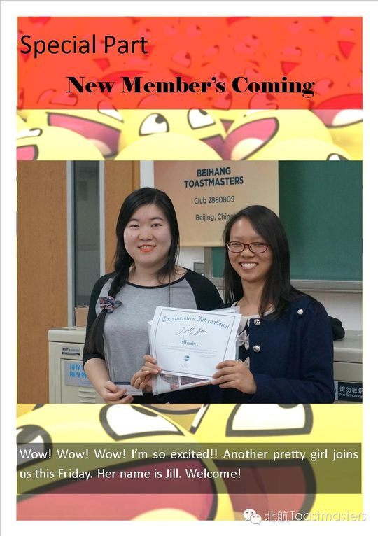
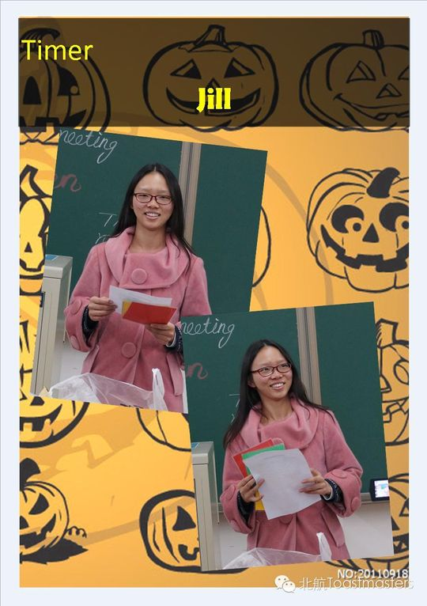
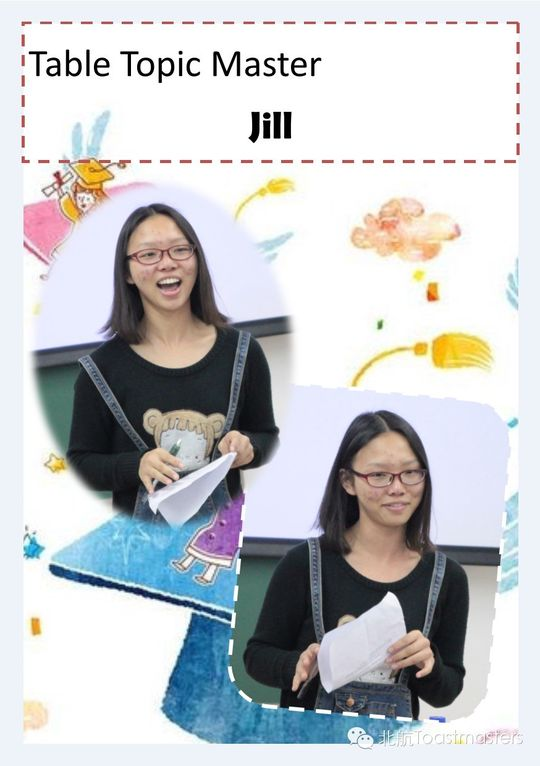
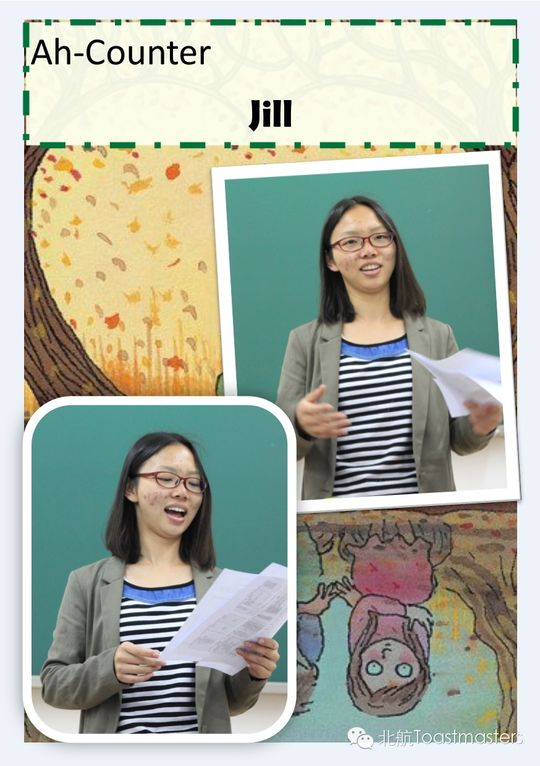
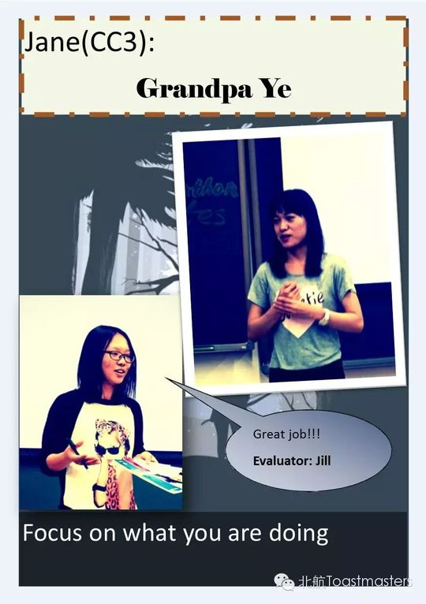
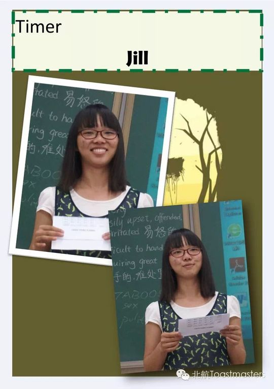
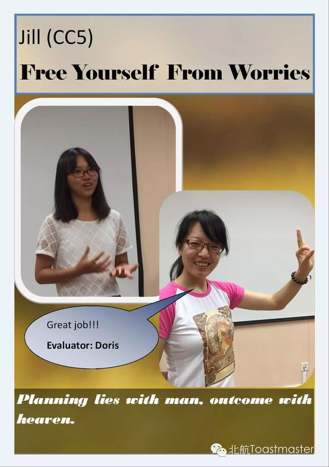
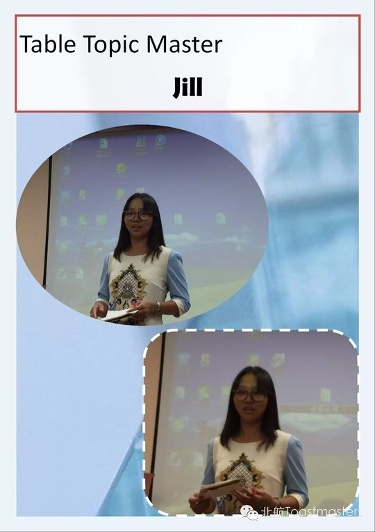
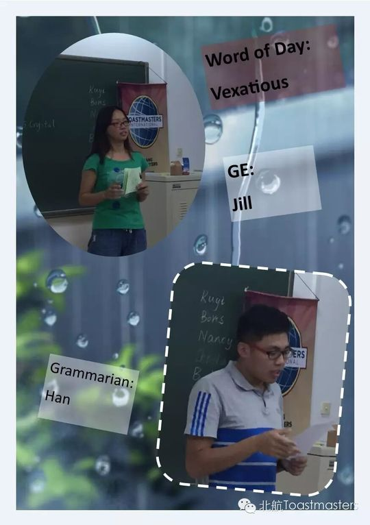

Jill
Jill 是北航头马 2015 年前后非常活跃的一位会员。2015 年 1 月 9 日第 84 次会议，她在新年的第一场会议上完成了自己的破冰首秀——CC1《Accept who you are（接纳自己）》。预告里把她形容为"a heart-warming girl（暖心的姑娘）"，期待她"shining debut（闪亮登场）"，这也成了她头马旅程的起点。
此后的一年里，Jill 几乎按部就班地完成了一段完整的成长曲线：从 CC2《Why I Wanna be a Vegetarian?》、CC3《Economic Bubble》、CC4《The Hedge between Keeps Friendship Green》、CC5《Free Yourself from Worries》、CC6《Sth you'd never say》，一直讲到 2015 年 9 月的 CC7《Poverty》。她的选题跨度很大——既有素食、友情、情绪管理这样贴近生活的话题，也敢于碰经济泡沫、贫困这类需要思考与担当的社会议题，显出她不只是想练口语，更愿意借演讲传递观点。
除了备稿演讲，Jill 也频繁承担会议角色：她多次担任 Toastmaster 主持（如第 108 次"Self-break"、第 114 次"Puppy Love"），做过即兴主持 TTM（第 90、107 次），还在第 106 次担任计时员。在与雅典娜俱乐部的联合中文会议（第 115 次）上，她和 Nancy 一起即兴上演了一段"甄嬛传"，活跃了全场。从台前到台后，她都是俱乐部稳定而温暖的一份子。
里程碑
- 2015-01-09 破冰首秀 CC1《Accept who you are》 ↗新年第84次会议上完成首场备稿演讲，被预告为'暖心姑娘的闪亮登场'。
- 2015-04-03 首次担任会议角色 TTM ↗在第90次'Graduation'会议担任即兴主持，开始走向台前主持工作。
- 2015-08-28 首次担任 Toastmaster 主持 ↗主持第108次'Self-break'会议，承担起组织一整场会议的责任。
- 2015-09-25 完成 CC7《Poverty》 ↗在约九个月内一路从CC1讲到CC7，敢于挑战贫困这样的社会议题。
闯关之路 · Competent Communication
做过的演讲 · 7 场
担任过的会议角色
为俱乐部做的事
- 以约九个月稳定节奏完成CC1至CC7七篇备稿演讲，是俱乐部活跃的演讲主力
- 多次担任Toastmaster会议主持，组织'Self-break''Puppy Love'等整场会议
- 担任即兴主持TTM（'Graduation''Career Planning'）与计时员，支撑会议运转
- 选题兼顾生活与社会议题（友情、情绪、素食、经济泡沫、贫困），为会议带来思考深度
- 参与与雅典娜俱乐部的联合中文会议，活跃跨俱乐部交流氛围
照片墙 · 时间线

✓
✓ ✓
✓ ✓
✓ ✓
✓ ✓
✓ ✓
✓ ✓
✓
✓
✓ ✓
✓ ✓
✓ ✓
✓
✓
✓ ✓
✓
✓
✓ ✓
✓
✓ ✓
✓


完整足迹 · 15 次出现（点开，每条可跳转原文）
- 2015-01-09第84次 · 破冰演讲 Accept who you are
- 2015-01-14第84次 · 破冰演讲 Accept who you are
- 2015-03-27第89次 · 做备稿演讲Why I Wanna be a Vegetarian?
- 2015-04-03第90次 · 担任Table Topic Master
- 2015-04-23做备稿演讲Economic Bubble
- 2015-05-07做备稿演讲The Hedge between Keeps Friendship Green
- 2015-07-24第105次 · 备稿演讲《Free Yourself from Worries》
- 2015-08-19第106次 · 担任计时员
- 2015-08-21第107次 · 担任Table Topic Master
- 2015-08-27第108次 · 担任本次会议Toastmaster主持
- 2015-09-04第109次 · 做CC6备稿演讲《Sth you'd never say》
- 2015-09-25第112次 · 做CC7备稿演讲《Poverty》
- 2015-10-15第114次 · 会议预告：担任第114次会议主持人(TM)
- 2015-10-26第115次 · 即兴演讲，与Nancy演甄嬛传情景
- 2017-01-06第164次 · 元旦趴~~@minutes of Beihang TMC164th Meetin